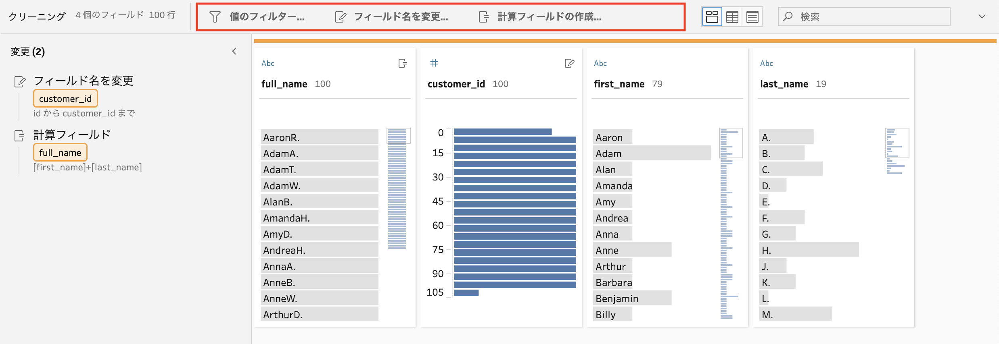
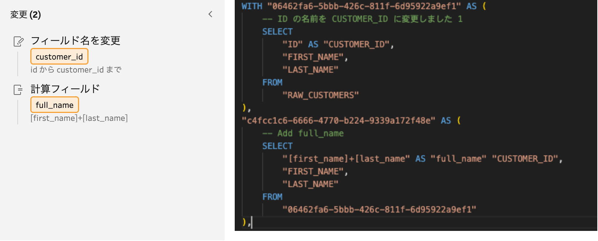

SQLの生成¶
各ステップは、それぞれのロジックに合わせたSQL文へと変換されます。ステップの種類ごとの変換仕様は、 コンバーター を参照してください。
共通の変換¶
Tableau Prepでは、どのステップでも利用できる共通的な処理がいくつか存在します。
{kind=link}
値のフィルター
フィールド名の変更
計算フィールドの追加
フィールドの削除
フィールドの型を変更
フィールドの複製
値のグループ化
フロー定義では、 beforeActionAnnotations 、 afterActionAnnotations 属性に記録されています。
annotationsの例¶
{
"nodeType" : ".v2018_2_3.SuperTransform",
"name" : "stg_customer",
"id" : "906b692f-8aba-4592-b073-a91832e452e3",
"baseType" : "superNode",
"nextNodes" : [ {
"namespace" : "Default",
"nextNodeId" : "e7eb3a16-c537-405b-bc55-06be5246f6e0",
"nextNamespace" : "Right"
} ],
"serialize" : false,
"description" : null,
"beforeActionAnnotations" : [ {
"namespace" : "Default",
"annotationNode" : {
"nodeType" : ".v1.RenameColumn",
"columnName" : "ID",
"rename" : "CUSTOMER_ID",
"name" : "ID の名前を CUSTOMER_ID に変更しました 1",
"id" : "addd6033-3356-4812-9d58-a69336f1ff54",
"baseType" : "transform",
"nextNodes" : [ ],
"serialize" : false,
"description" : null
}
}, {
"namespace" : "Default",
"annotationNode" : {
"nodeType" : ".v1.AddColumn",
"columnName" : "full_name",
"expressions" : "[first_name]+[last_name]",
"name" : "Add full_name",
"id" : "7bb30a7d-d90b-4ba8-bbd0-d6b7bb8271ba",
"baseType" : "transform",
"nextNodes" : [ ],
"serialize" : false,
"description" : null
}
} ],
"afterActionAnnotations" : [ ],
"actionNode" : null
}
これらの作用は、SQL上ではCTEとして表現されます。
{kind=link}
未知のステップ¶
変換仕様が見つからなかった場合、そのステップは未知のステップとして扱います。
未知のステップでは、dbtのコンパイルができる最低限の状態のSQLを生成します。
親が存在しない未知のステップ¶
親がない未知のステップは、 dbt source と、それを参照するモデルを作成します。
未知なステップなので、カラム定義は不明（ "*" ）として扱われます。
version: 2
sources:
- name: SOURCE
tables:
- name: <未知のステップ名>
description: |-
{ ... }
WITH source AS
(
SELECT *
FROM {{ source('source', '<未知のステップ名>') }}
)
SELECT *
FROM source
親がひとつだけの未知のステップ¶
親が一つだけの未知のステップでは、カラム定義が不明のため、 "*" で親をSELECTするだけのSQLを生成する。
WITH source AS
(
SELECT *
FROM {{ ref('親モデル名') }}
)
SELECT *
FROM source
親が複数ある未知のステップ¶
親が複数ある未知のステップでは、カラムが特定できないため、すべての親テーブルをユニオンするだけのSQLを生成します。
WITH union_tables AS
(
SELECT *
FROM {{ ref('親モデル名_1') }}
UNION ALL
SELECT *
FROM {{ ref('親モデル名_2') }}
UNION ALL
SELECT *
FROM {{ ref('親モデル名_3') }}
)
SELECT *
FROM union_tables